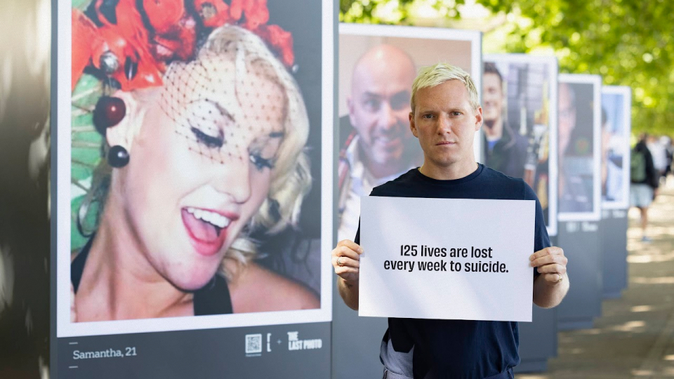
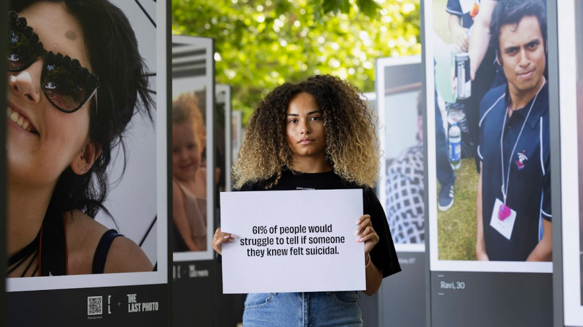
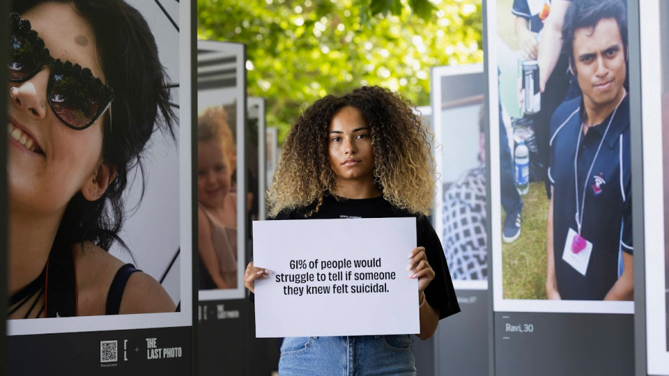
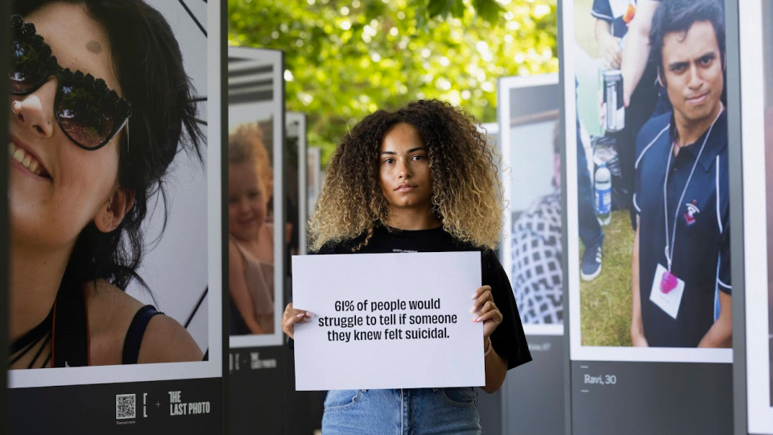
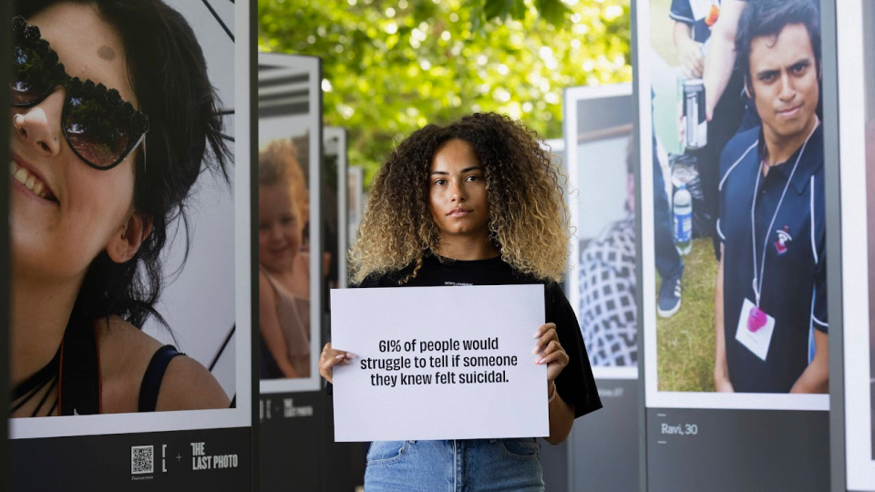

 


As one of the producers on The Last Photo campaign for CALM x ITV, I helped bring to life a powerful 360 activation designed to challenge perceptions around suicide. The campaign began with an unbranded installation along London’s South Bank, featuring 50 large smiling portraits. Two days later, it was revealed live on ITV that each photo was the last image taken before the individual died by suicide—underscoring the message that “suicidal doesn’t always look suicidal.

I was closely involved in producing the digital elements of the campaign, including the ooh, press & the implementation of QR codes at the exhibition. These codes gave visitors access to audio testimonies from loved ones and connected them directly to detailed story pages hosted on CALM’s website. This digital layer deepened the emotional resonance of the campaign and helped drive engagement beyond the physical installation.
Alongside the campaign was also a video directed by
Agency: adam&eveDDB
Creatives: Andy Clough & Richard McGrann
Director: Max Fisher
Production: Amy Simmons & Richard Bailey
Designer: Scott Silvey & Mauricio Brandt
Audio Engineer: Parv Thind
Account Team: Rosie Snowball, Adam Patel, Louis Lunts
Yellow Pencil / Film / Health & Wellbeing / 2023
Yellow Pencil / Media / Integrated
Yellow Pencil / Press & Outdoor / Poster Campaigns
Graphite Pencil / Experiential / B2C Activations
Graphite Pencil / Integrated / Health & Wellbeing
Graphite Pencil / Integrated / Content Led Campaigns
Graphite Pencil / PR / Events & Stunts
Wood Pencil / Film / TV/VOD Commercials 31 - 120 Seconds
Wood Pencil / Sound Design & Use of Music / Adapted Music
Wood Pencil / Press & Outdoor / Press Campaigns
Wood Pencil / Direction / Short Form
Wood Pencil / Impact / Collaboration
The One Show - Silver Pencil
LLB Awards: Immortal Winner CALM x ITV The Last Photo
AdAge: Best in Show Idea, Best in Show Social Good, Best in Show Print / OOO/ Design, CALM x ITV The Last Photo
Clio Awards: 5 x Gold, 2 x Silver, 1 x Bronze, CALM x ITV The Last Photo
British Arrows: Commercial of the Year, 5 x Gold, 3 x Silver, CALM x ITV The Last Photo